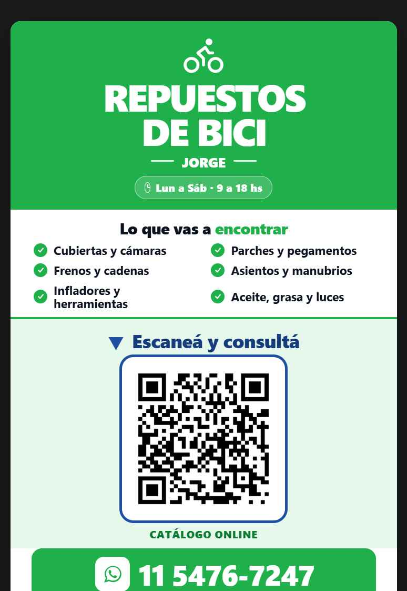
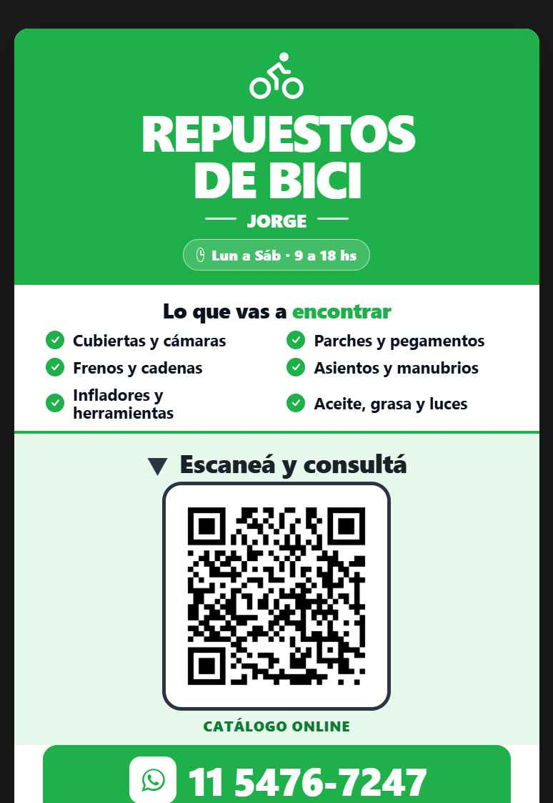

Tres acentos para el QR
Mismo cartel, distinto color de acento. Mirá cuál te cierra mejor.

1 · Azul tinta
Profesional y calmo. La combo azul + verde se lee intencional. Llama al QR sin gritar.
Mi recomendación
2 · Coral
Cálido y con energía. Llama mucho la atención, pero un escalón más "llamativo".

3 · Carbón
Sobrio y elegante, pero casi no se distingue del texto negro: pierde el efecto "mirá acá".